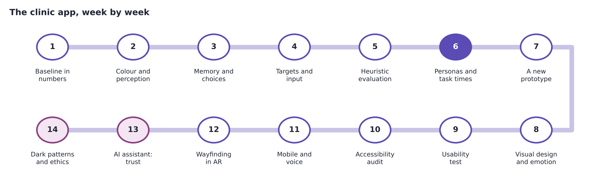
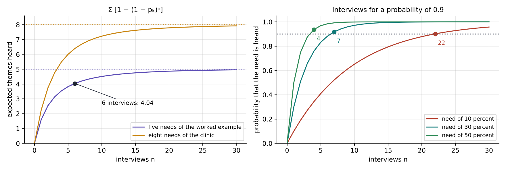
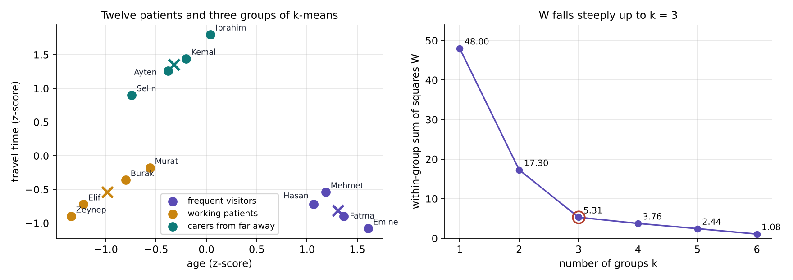
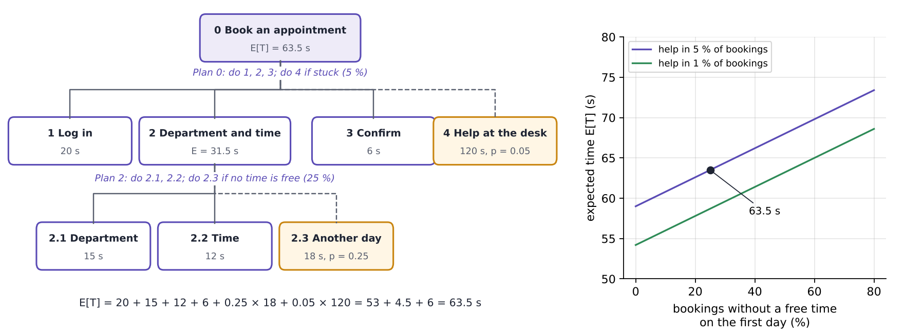
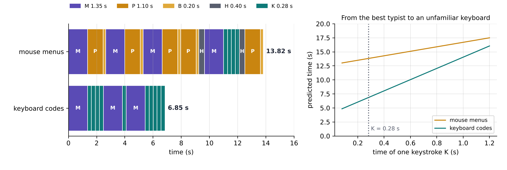
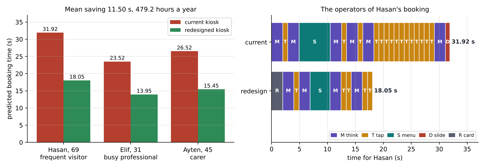

Overview
Week 1 introduced user-centred design and its cycle of four activities. This week puts the cycle to work with the methods of its first two activities: Understanding the context of use and specifying what users need. Interviews collect the needs of patients, and a model of saturation tells when enough interviews have been held. Personas condense the patients into a few vivid users, and the week builds them from data with the k-means method. Hierarchical task analysis breaks a booking into subtasks with plans. The keystroke-level model predicts how long an expert needs for it. The clinic app reaches stage 6: Three personas with predicted booking times before and after the redesign. The Python step prepares the grouping, and the week closes with synthetic users written by artificial intelligence (AI).
Week at a glance
flowchart LR A["From the cycle to the methods"] --> B["Interviews and saturation"] B --> C["Personas"] C --> D["Hierarchical task analysis"] D --> E["The keystroke-level model"] E --> F["Interface clinic"] F --> G["The human side"] G --> S["The clinic app, stage 6"] S --> H["Toward human-AI interaction"]
Every method on this page is also written as Python code in the Colab notebook of the week. Its code is divided into numbered sections. Each orange box on this page names the section whose code carries out what the text above the box explains. The box says what to run and what to look at in that section, and its button opens the Colab notebook at that place. The games, the practice parts and the self-assessment of the week are in the interactive lab. Each violet box opens one part of the interactive lab. The part ends with a link back to its box on this page, and the Colab notebook is always opened from the orange boxes here.
Python step 6: Scaling, distances and groups
Python code in the Colab notebook, right after Section 0 (setup). Open the Colab notebook and run this step cell by cell: It consists of short pieces of Python code with their explanations, a quick check and three exercises. Topics: Profiles as a table · Scaling with z-scores · Distances between people · k-means with scikit-learn.
The step continues with Python [1], NumPy [2] and pandas [3] and adds the library scikit-learn [4]. It describes people as the rows of a table and puts the columns on one scale with z-scores. It measures the distance between two people and ends by grouping people with k-means. Students who have never programmed start with the start-here notebook of the course.
Week 1 measured the booking flow and named three users: A pensioner with reading glasses, a parent with a sick child and a nurse at the front desk. Weeks 2 to 4 fitted colours, menus and targets to human abilities, and Week 5 ranked sixteen problems of the app.
This week asks who the patients are and what they do. Stage 6 builds three personas from data and predicts how long each of them needs to book at the kiosk.

From the cycle to the methods
Week 1 described human-centred design as a cycle of four activities [5]. The team understands and specifies the context of use, specifies the requirements of the users, produces design solutions and evaluates them. Each activity has its own methods, and the course meets them week by week.
| Activity of ISO 9241-210 | Methods | Week |
|---|---|---|
| Understand and specify the context of use | Interviews and personas | 6 |
| Specify the user requirements | Task analysis and predicted task times | 6 |
| Produce design solutions | Prototypes, navigation and visual design | 7 and 8 |
| Evaluate the designs against the requirements | Heuristic evaluation and usability tests | 5 and 9 |
Gould and Lewis asked for an early focus on users and their tasks [6]. The methods of this week turn this demand into data: What patients say in interviews, which groups they form and which steps a booking takes. Each method ends with a number that later weeks can test: The themes heard, the spread within the groups and the predicted time of a task.
Check your understanding. Which activity of human-centred design does a persona serve first?
Interviews and saturation
An interview is a conversation with a purpose. In a semi-structured interview, the interviewer follows a guide of topics but lets the person answer in their own words. The form of a question shapes the answer, as the table shows with three questions to a patient of the clinic.
| Kind of question | Example | What it yields |
|---|---|---|
| Open | Tell me about your last visit, from the moment you decided to book. | Stories with needs that the team did not expect |
| Closed | Did you book your last appointment at the kiosk? | One fact, quickly |
| Leading | The kiosk is hard to use, isn't it? | Agreement with the interviewer, not the view of the patient |
After the interviews, the team writes each need on a note and groups similar notes into themes on a wall, an affinity diagram. A study is saturated when further interviews bring no new themes. Guest and colleagues coded 60 interviews and found that saturation was reached within the first 12 [7]. The basic elements of the main themes were already present after 6 interviews. Francis and colleagues turned saturation into a rule: Analyse an initial sample, then stop after a fixed number of further interviews without new ideas [8]. They demonstrated the rule with an initial sample of 10 interviews and a stopping criterion of 3.
The model of discovery of Week 5 carries over from evaluators to interviews. Suppose that a need is shared by the share \(p_k\) of the patients, and each interview reveals all needs of one patient chosen at random. The expected number of themes heard after \(n\) interviews, and the interviews that hear a need of share \(p\) with the probability 0.9, are
\(K\) is the number of themes, and each term of the sum is the probability that at least one of the \(n\) interviews reveals theme \(k\). \(E_n\) counts themes and has no unit, and \(n_{0.9}\) is rounded up to a whole interview. The model assumes open questions that reveal all needs of a patient.
→ These formulas with numbers, step by step: Lab Part A, calculator, steps 1 to 5.
A worked example. Suppose that five needs are shared by 60, 40, 30, 20 and 10 percent of the patients. After six interviews, the five needs are heard with the probabilities \(1 - 0.4^6 = 0.996\), \(1 - 0.6^6 = 0.953\), \(1 - 0.7^6 = 0.882\), \(1 - 0.8^6 = 0.738\) and \(1 - 0.9^6 = 0.469\). So \(E_6 \)\({}= 0.996 \)\({}+ 0.953 \)\({}+ 0.882 \)\({}+ 0.738 \)\({}+ 0.469 \)\({}= 4.04\) of the five themes. The rare need is heard in fewer than half of such studies. For a probability of 0.9 it needs \(n_{0.9} \)\({}= \ln 0.1 / \ln 0.9 \)\({}= -2.303 / \)\({}-0.105 \)\({}= 21.9\), rounded up to 22 interviews.

Saturation in the model depends on who is asked, not only on how many. A rare need, such as an interpreter, stays unheard if nobody who needs one is asked. Teams therefore choose interviewees on purpose, for example patients of different ages, distances and skills.
Check your understanding. Why is a leading question a poor question in an interview?
Check your understanding. A need is shared by 20 percent of the patients. With what probability do four interviews with patients chosen at random hear it?
Part A of the interactive lab seats twelve patients in a waiting hall. Eight interviews are allowed, and each one starts with an open, a closed or a leading question. The needs that you hear appear as notes on an affinity wall.
Interactive lab, Part A. Interviews in the waiting room in 3D: Eight interviews with twelve patients, three kinds of questions and an affinity wall, with the model of saturation step by step. The results can be copied into the Colab notebook.
Python code in the Colab notebook, Section 1. Open Section 1 of the Colab notebook and run it. The functions expected_themes and stopping_point carry out the model of saturation and the rule of Francis and colleagues. The first is checked on the worked example. Paste the results of Part A into MY_INTERVIEWS, and the code counts the new themes of each interview. A figure compares your saturation curve with the model and shows the themes per interview for each kind of question.
- Rewrite the closed question "Do you like the app?" as an open question. What could the open version reveal?
- Whom would you interview to hear a rare need, such as booking for a relative who does not speak Turkish?
Personas
A persona is a fictional user with a name, a face, goals and a context, who stands for a group of real users. Pruitt and Grudin trace the idea to the designer Alan Cooper [9]. They describe how teams at Microsoft built personas from data and kept them in view during development. A persona replaces "the user", whom every designer imagines differently, with a person whom the whole team knows.
Personas invented at a desk tend to mirror their designers. Data-driven personas start from measurements, so that each persona stands for a measured group of users [10]. Closeness needs numbers on one scale. Each attribute \(x\) is therefore turned into a z-score, and the distance between two people \(i\) and \(j\) adds the squared differences over all attributes:
\(\bar{x}\) is the mean and \(s\) the standard deviation of an attribute over all people, so \(z\) counts standard deviations from the mean and has no unit. The index \(a\) runs over the attributes, and \(d_{ij}\) is the Euclidean distance between the two people.
A worked example. The twelve patients of the clinic have the mean age 51.33 years with the standard deviation 16.59. They make 6.25 visits a year (4.04), rate their digital skill 3.00 of 5 (1.35) and travel 45.00 minutes (27.76). Fatma is 74, visits 12 times, has the skill 1 and travels 20 minutes. Her z-scores are \((74 - 51.33)/16.59 = 1.37\), then 1.42, \(-1.48\) and \(-0.90\). Elif, 31 years, 2 visits, skill 5 and 25 minutes, has \(-1.23\), \(-1.05\), \(1.48\) and \(-0.72\). Their distance is \(\sqrt{2.60^2 + 2.47^2 + 2.96^2 + 0.18^2} \)\({}= \sqrt{6.76 + 6.10 + 8.76 + 0.03} \)\({}= \sqrt{21.65} \)\({}= 4.65\).
Groups are found with k-means. It places \(k\) centres, assigns each person to the nearest centre and moves each centre to the mean of its members. It repeats the two steps until no person changes the group. The algorithm goes back to Lloyd [11], and each round lowers the within-group sum of squares
\(C_c\) is the set of people in group \(c\), \(\mu_c\) the mean of their z-scores and \(\lVert \cdot \rVert\) the length of a vector. Each term is thus the squared distance of a person to the centre of the group, and a small \(W\) means tight groups. The team must choose \(k\), and a poor start can end in a poorer grouping. Implementations therefore restart the method several times and keep the best result [4].
Animation. The twelve patients by their age and their travel time as z-scores, so that the picture shows every distance. A new random start places \(k\) centres on random patients. Each step either lets every patient join the nearest centre or moves each centre to the mean of its members. Play runs the steps until no patient changes the group. Some starts end in a poorer grouping with a larger \(W\).
For the twelve patients and \(k = 3\), k-means finds three groups of four, as the table shows. Their \(W\) is 5.31. A grouping by age alone gives 9.94: It puts Selin, a carer of 39, among the working patients and Murat, a working patient of 42, among the carers.
| Persona | Members of the group | Mean of the group | Needs heard in the interviews |
|---|---|---|---|
| Hasan, 69, the frequent visitor | Fatma, Hasan, Emine, Mehmet | 73 years, 11.25 visits, skill 1.5, 22.5 min | Finding the department, small text, a forgotten patient number |
| Elif, 31, the busy professional | Elif, Burak, Zeynep, Murat | 35 years, 2 visits, skill 4.5, 30 min | Booking after hours, waiting without information |
| Ayten, 45, the carer | Ayten, Ibrahim, Selin, Kemal | 46 years, 5.5 visits, skill 3, 82.5 min | Long journeys, booking for a relative, an interpreter |
The persona adds a name, a picture, a short story and goals to the numbers. Week 1 named three users. The pensioner with reading glasses and the parent with a sick child return as Hasan and Ayten. The data found a third group that Week 1 had missed, working patients who book in the evening. The nurse at the front desk is not a patient, so she receives a persona of her own from interviews with staff.

Check your understanding. Why are the attributes scaled before k-means?
Check your understanding. Two patients have the z-scores (1, 0) and (−1, 1) on two attributes. What is their distance?
Part B of the interactive lab brings the twelve patients into a hall with three zones on the floor. You form the groups yourself, and the page computes their \(W\) after every move.
Interactive lab, Part B. Personas from the waiting hall in 3D: Twelve patients with profiles of four numbers, sorted into three groups on the floor, with the within-group sum of squares of your grouping. The results can be copied into the Colab notebook.
Python code in the Colab notebook, Section 2. Open Section 2 of the Colab notebook and run it. The functions scale and within carry out the formulas of this section, and the distance of Fatma and Elif is checked on the worked example. The code groups the patients with k-means. Paste the results of Part B into MY_GROUPS, and the code compares your groups with those of k-means. A table gives the means of each group, the skeleton of a persona.
- A team designs for "Hasan, 69" and forgets that some older patients use phones with ease. How can a persona hide the differences within its group?
- Who in a design team should own the personas, and how often should they be checked against new data?
Hierarchical task analysis
Personas say who uses the app, and task analysis says what they do. Hierarchical task analysis (HTA) describes a goal as a hierarchy of subtasks. Each level has a plan that says in which order and under which conditions its subtasks are done. The method dates from the late 1960s, and Stanton reviewed its development and uses over more than three decades [12]. The table gives the analysis of a booking in the clinic app.
| Number | Subtask | Time | Plan or probability |
|---|---|---|---|
| 0 | Book an appointment | Do 1, 2 and 3 in order; do 4 when stuck | |
| 1 | Log in | 20 s | |
| 2 | Choose a department and a time | Do 2.1 and 2.2; do 2.3 when no time is free | |
| 2.1 | Choose the department | 15 s | |
| 2.2 | Choose a time | 12 s | |
| 2.3 | Choose another day | 18 s | 25 percent of the bookings |
| 3 | Confirm | 6 s | |
| 4 | Ask for help at the desk | 120 s | 5 percent of the bookings |
A plan with a branch makes the time of the task uncertain. If the step \(j\) takes \(t_j\) seconds and happens with the probability \(q_j\), the expected time of the task is
The sum runs over the lowest subtasks, those without subtasks of their own, and \(q_j = 1\) for the subtasks that are always done. For a subtask inside a branch, \(q_j\) is the product of the probabilities on the path to it.
→ This formula with numbers, step by step: Lab Part C, calculator, steps 1 to 5.
A worked example. In the booking above, the subtasks that are always done take \(20 + 15 + 12 + 6 = 53\) s. Another day is needed in 25 percent of the bookings, which adds \(0.25 \times 18 = 4.5\) s. Help at the desk adds \(0.05 \times 120 = 6\) s. So \(E[T] = 53 + 4.5 + 6 = 63.5\) s. The rare help at the desk costs more time on average than the frequent search for another day.

Check your understanding. A task has steps of 10 s and 20 s that are always done and a step of 40 s that happens in one booking of four. What is its expected time?
Interactive lab, Part C. The expected time of a task step by step: The booking with its two branches, with sliders for the times and the probabilities and three presets.
Python code in the Colab notebook, Section 3. Open Section 3 of the Colab notebook and run it. The function expected_time walks through a task tree and carries out the formula of this section, and it is checked on the worked example. The function steps prints the tree with the expected time of each subtask. A figure shows how the expected time grows with the share of full days.
- Break a task that you did today, such as paying a bill, into subtasks with a plan. Where is a branch?
- Which branch of the booking would you remove first, and what would it cost the hospital?
Predicting task times: The keystroke-level model
Card, Moran and Newell proposed the keystroke-level model (KLM) to predict how long an expert needs for a task on a given system [13]. The method of the task is written as a sequence of operators, and the times of the operators are added. Tested against data on ten systems, the prediction error was 21 percent for single tasks. The KLM is the simplest member of the family of models of goals, operators, methods and selection rules (GOMS) [14, 15].
| Operator | Meaning | Time |
|---|---|---|
| K | Pressing a key, for an average typist who is not a secretary | 0.28 s |
| B | Clicking a mouse button, timed as a key of a skilled typist | 0.20 s |
| P | Pointing with the mouse to a target on the screen | 1.10 s |
| H | Moving the hand between the keyboard and the mouse | 0.40 s |
| M | Preparing mentally for the next physical action | 1.35 s |
| R | Waiting for the response of the system | measured |
Card, Moran and Newell count a click of a mouse button as a keystroke. This week writes it as B and gives it their time of a skilled typist, 0.20 s, while keys on the keyboard take 0.28 s. The time of a method is
Each \(n\) counts how often an operator occurs in the method, and each \(t\) is its time in seconds. The hard part is placing M. Card, Moran and Newell gave rules for it [13]. For example, an M comes before each command that the user must choose, but not inside a code typed as one unit.
→ This formula with numbers, step by step: Lab Part D, calculator, steps 1 to 5.
A worked example. A nurse at the front desk books an appointment in two ways. With the mouse, she opens the menu of departments, picks the department and a free time and clicks into the field of the ticket. She moves her hand to the keyboard, types the four digits of the ticket, returns to the mouse and clicks Book: MPB MPB MPB PBHMKKKK HPB. With the keyboard, she types the code of the department and Enter, accepts the first free time with Enter and types the ticket with Enter: MKKKK MK MKKKKK.
The mouse method has 4 M, 5 P, 5 B, 2 H and 4 K, so \(T \)\({}= 5.40 \)\({}+ 5.50 \)\({}+ 1.00 \)\({}+ 0.80 \)\({}+ 1.12 \)\({}= 13.82\) s. The keyboard method has 3 M and 10 K, so \(T = 4.05 + 2.80 = 6.85\) s. At 300 bookings a day on 250 working days, the codes save \(300 \times 250 \times 6.97 = 522{,}750\) s, about 145.2 hours a year.

The KLM predicts the time of an expert who makes no errors [13]. Beginners are slower, especially with codes that they must first learn, and the model says nothing about learning or fatigue. Pointing need not use the average P either. Fitts' law of Week 4 gives a time for each target from its distance and width.
Phones and kiosks need operators of their own. Holleis and colleagues adapted the times of the operators to mobile phones and added new ones [16]. Examples are gestures and shifts of attention between the phone and the surroundings. On the touch screen of the kiosk, this week uses a tap T that combines pointing and touching. The scene below plays a booking at the lobby kiosk operator by operator.
Scene: Three personas at the kiosk. Hasan, Elif and Ayten book an appointment at the lobby kiosk. The buttons choose the persona and the kiosk, and Play runs the booking operator by operator at double speed. The label above the persona names the current operator, and the timeline below shows the operators of both kiosks with the times of the chosen persona. The times of M and T for each persona are the assumptions of stage 6.
Check your understanding. A method is MPB MPB. What is its predicted time with the operators of the table?
Check your understanding. Why can the KLM not predict the time of a beginner?
Part D of the interactive lab seats you at the front desk. Patients come with a request and a ticket, and you book three of them with the mouse and three with the codes.
Interactive lab, Part D. The front desk race in 3D: Three bookings with the mouse and three with codes, timed and compared with the KLM, and the KLM step by step. The results can be copied into the Colab notebook.
Python code in the Colab notebook, Section 4. Open Section 4 of the Colab notebook and run it. The function klm_time carries out the formula of this section and is checked on the worked example. Paste the results of Part D into MY_RACE, and the code compares your times with the predictions. A figure shows how close each method came to the model from booking to booking.
- The codes save seven seconds per booking. What do they cost a new nurse in her first week?
- Which app on your phone offers a shortcut for experts, and how did you learn it?
Interface clinic: Users and tasks on the clinic screens, before and after
The four pairs below show screens of the clinic app before and after a redesign. Each redesign answers a need heard in the interviews or a step of the task analysis.
Interface clinic: Booking for a relative. The first screen of a booking.
BeforeOnly for the account holder
Carers book for a mother, a son or a wife, as two of the twelve patients said. The app forces them to log in as the other person.
AfterWho is the appointment for?
Family members are linked once, with their consent, and the booking starts by choosing one.
Interface clinic: Booking outside office hours. The app at 21:30 in the evening.
BeforeClosed after five
Elif and other working patients can book only in the evening, a need of three of the twelve patients.
AfterBooking at any hour
Free times come from the same calendar that the desk uses, so the app needs no staff at night.
Interface clinic: The next visit of a frequent visitor. The home screen for a patient with regular visits.
BeforeEvery booking starts from zero
Hasan sees the same cardiologist ten times a year, yet each booking repeats every step of the task analysis.
AfterBook again with one tap
The redesign skips the department and the doctor, which removes two decisions M and several taps.
Interface clinic: Waiting in the hall. The screen of the app on the day of the visit.
BeforeThe time and nothing else
Waiting without information was the second most frequent theme, heard from five of twelve patients.
AfterThe delay and the expected call
The screen states the delay, the expected time and the queue, and it frees the patient from watching the door.
- Which persona gains the most from each screen marked After?
- Which redesign would the keystroke-level model favour, and which would it not see at all?
The human side: Whose voice is heard?
Interviews reach the patients who come to the clinic and have time to talk. Patients who gave up, who cannot leave home or who do not speak the language are missing, although they may need the app most. A persona of the average patient hides them twice: Once in the interviews and once in the mean of the group.
Interviews with patients also need care. They ask for consent before recording and state that the answers do not affect any treatment. The notes must not identify the person. Patients in a waiting room are often worried or in pain, so interviews stay short and can be stopped at any time.
A shop that sells trousers in one average size fits almost nobody well. Sizes from small to extra large are personas of the body: A few groups, each close to its members. A design for the average patient fails in the same way, which is why the clinic app needs several personas.
- Which patients of the clinic would never answer an invitation to an interview? How could the team reach them?
- Should a hospital pay patients for interviews? What could payment change in the answers?
The clinic app, stage 6: Personas, task analysis and predicted task times
Stage 6 brings the methods of the week together for the kiosk of the lobby. The personas come from the groups of k-means, and the steps of the booking from the task analysis. The KLM predicts the time of the booking before and after the redesign of Weeks 3 to 5.
| Step | Current kiosk | Operators | Redesigned kiosk | Operators |
|---|---|---|---|---|
| Patient number | Typed: 11 digits and OK | M + 12 T | Card held at the reader | R = 2.0 s |
| Start | Tap Book an appointment | M + T | Tap Book an appointment | M + T |
| Department | Find it among forty names | M + S = 5.62 s | Split menu, frequent first | M + S = 3.55 s |
| Day and time | Tap a day, then a time | 2 M + 2 T | Tap Tomorrow and a time on one screen | M + 2 T |
| Confirm | Slide to confirm | M + D = 0.80 s | Check, tap Confirm and Print the slip | M + 2 T |
| Total | 6 M + 15 T + 6.42 s | 4 M + 5 T + 5.55 s |
The search times of the menus come from stage 3 and the slide from stage 4. The operators M and T take different times for the three personas. Elif has the time of Card, Moran and Newell for M and a quick tap of 0.6 s. Hasan needs 2.0 and 0.9 s, and Ayten 1.6 and 0.7 s. These values are assumptions of the stage, chosen in line with Weeks 3 and 4, and Week 9 measures them with patients.
The predicted times. For Elif, the current kiosk takes \(6 \times 1.35 \)\({}+ 15 \times 0.6 \)\({}+ 5.62 \)\({}+ 0.80 \)\({}= 8.10 \)\({}+ 9.00 \)\({}+ 6.42 \)\({}= 23.52\) s. The redesign takes \(4 \times 1.35 \)\({}+ 5 \times 0.6 \)\({}+ 3.55 \)\({}+ 2.0 \)\({}= 5.40 \)\({}+ 3.00 \)\({}+ 5.55 \)\({}= 13.95\) s. Hasan needs 31.92 and 18.05 s, and Ayten 26.52 and 15.45 s. The savings of 9.57, 13.87 and 11.07 s have the mean 11.50 s. With the cost formula of Week 1, 600 bookings a day on 250 days save \(C \)\({}= 600 \times 250 \times 11.50 \)\({}= 1{,}725{,}000\) s, or 479.2 hours a year.

| Question of stage 6 | Answer of the analysis | Where |
|---|---|---|
| Who are the patients of the clinic? | Three groups of four: Frequent visitors, working patients and carers | Section 2 |
| How long does a booking take on average? | 63.5 s, with help at the desk as the costliest branch | Section 3 |
| How much does the redesigned kiosk save? | 11.50 s per booking, 479.2 hours a year | Section 5 |
| Which persona gains the most? | Hasan: 13.87 s per booking | Section 5 |
Stage 6 gives the redesign three users with names and a predicted time for each. The largest saving goes to Hasan, whose taps and decisions take the longest. The card reader removes his costliest step, the typed patient number of 12.8 s. Week 7 builds the redesigned flow as a prototype, and Week 9 measures the real times.
Check your understanding. Why does Hasan gain more from the redesign than Elif?
Interactive lab, Part E. Stage 6 by hand for Ayten: Her predicted times at both kiosks and the hours that her saving would bring in a year.
Python code in the Colab notebook, Section 5. Open Section 5 of the Colab notebook and run it. The code collects the results of stage 6 in the dictionary STAGE6. It holds the predicted times of the three personas at both kiosks, the mean saving, the hours saved a year and the expected time of the booking tree. A figure draws the two panels of the figure above.
Your application
The keystroke-level model applies to the frequent tasks of any app. The Colab notebook holds an application switch with four further apps: Online banking, an e-government service, food delivery and course registration at a university. Each has a current and a redesigned method for one frequent task.
Python code in the Colab notebook, Section 6. Open Section 6 of the Colab notebook, set APP to one of the five names in the comment and run the cell. The code predicts the time of both methods with klm_time and the hours that the redesign saves in a year.
Toward human-AI interaction
Large language models can write answers in the voice of a persona, and some teams consider asking them instead of real users. Hämäläinen and colleagues let the model Generative Pre-trained Transformer 3 (GPT-3) answer open questions about experiencing video games as art [17]. The synthetic answers were believable, and the authors see a use for them in piloting a study and finding ideas. They also warn that any finding must be checked with real people. Answers collected online may themselves come from such models.
A persona voiced by a model is still a persona: A summary of a group, not one of its members. The guideline of Amershi and colleagues to make clear how well the system can do what it does applies to such tools as well [18].
Suppose that the team asks a language model to answer as Hasan, 69, a frequent visitor. The answers sound plausible, but they repeat what the model learned about older people in general. Used to draft the guide of an interview, they save time. Used instead of the interviews, they would invent the needs of the clinic.
- Which question of an interview guide could a language model help to draft, and which answers would you never trust from it?
- How could a team notice that the answers to an online survey were written by a model?
Review cards
Select a card to turn it over.
References
[1] Van Rossum, G., & Drake, F. L. (2009). Python 3 Reference Manual. CreateSpace.
[2] Harris, C. R., Millman, K. J., van der Walt, S. J., Gommers, R., Virtanen, P., Cournapeau, D., Wieser, E., Taylor, J., Berg, S., Smith, N. J., Kern, R., Picus, M., Hoyer, S., van Kerkwijk, M. H., Brett, M., Haldane, A., Fernández del Río, J., Wiebe, M., Peterson, P., Gérard-Marchant, P., Sheppard, K., Reddy, T., Weckesser, W., Abbasi, H., Gohlke, C., & Oliphant, T. E. (2020). Array programming with NumPy. Nature, 585(7825), 357-362. https://doi.org/10.1038/s41586-020-2649-2
[3] McKinney, W. (2010). Data structures for statistical computing in Python. In Proceedings of the 9th Python in Science Conference (pp. 56-61). https://doi.org/10.25080/Majora-92bf1922-00a
[4] Pedregosa, F., Varoquaux, G., Gramfort, A., Michel, V., Thirion, B., Grisel, O., Blondel, M., Prettenhofer, P., Weiss, R., Dubourg, V., Vanderplas, J., Passos, A., Cournapeau, D., Brucher, M., Perrot, M., & Duchesnay, É. (2011). Scikit-learn: Machine learning in Python. Journal of Machine Learning Research, 12, 2825-2830. https://jmlr.org/papers/v12/pedregosa11a.html
[5] International Organization for Standardization. (2019). Ergonomics of human-system interaction - Part 210: Human-centred design for interactive systems (ISO Standard No. 9241-210:2019). ISO. https://www.iso.org/standard/77520.html
[6] Gould, J. D., & Lewis, C. (1985). Designing for usability: Key principles and what designers think. Communications of the ACM, 28(3), 300-311. https://doi.org/10.1145/3166.3170
[7] Guest, G., Bunce, A., & Johnson, L. (2006). How many interviews are enough? An experiment with data saturation and variability. Field Methods, 18(1), 59-82. https://doi.org/10.1177/1525822X05279903
[8] Francis, J. J., Johnston, M., Robertson, C., Glidewell, L., Entwistle, V., Eccles, M. P., & Grimshaw, J. M. (2010). What is an adequate sample size? Operationalising data saturation for theory-based interview studies. Psychology & Health, 25(10), 1229-1245. https://doi.org/10.1080/08870440903194015
[9] Pruitt, J., & Grudin, J. (2003). Personas: Practice and theory. In Proceedings of the 2003 Conference on Designing for User Experiences (pp. 1-15). ACM. https://doi.org/10.1145/997078.997089
[10] McGinn, J., & Kotamraju, N. (2008). Data-driven persona development. In Proceedings of the SIGCHI Conference on Human Factors in Computing Systems (pp. 1521-1524). ACM. https://doi.org/10.1145/1357054.1357292
[11] Lloyd, S. (1982). Least squares quantization in PCM. IEEE Transactions on Information Theory, 28(2), 129-137. https://doi.org/10.1109/TIT.1982.1056489
[12] Stanton, N. A. (2006). Hierarchical task analysis: Developments, applications, and extensions. Applied Ergonomics, 37(1), 55-79. https://doi.org/10.1016/j.apergo.2005.06.003
[13] Card, S. K., Moran, T. P., & Newell, A. (1980). The keystroke-level model for user performance time with interactive systems. Communications of the ACM, 23(7), 396-410. https://doi.org/10.1145/358886.358895
[14] Card, S. K., Moran, T. P., & Newell, A. (2018). The Psychology of Human-Computer Interaction. CRC Press. Original work published 1983 by Lawrence Erlbaum Associates. https://doi.org/10.1201/9780203736166
[15] John, B. E., & Kieras, D. E. (1996). The GOMS family of user interface analysis techniques: Comparison and contrast. ACM Transactions on Computer-Human Interaction, 3(4), 320-351. https://doi.org/10.1145/235833.236054
[16] Holleis, P., Otto, F., Hussmann, H., & Schmidt, A. (2007). Keystroke-level model for advanced mobile phone interaction. In Proceedings of the SIGCHI Conference on Human Factors in Computing Systems (pp. 1505-1514). ACM. https://doi.org/10.1145/1240624.1240851
[17] Hämäläinen, P., Tavast, M., & Kunnari, A. (2023). Evaluating large language models in generating synthetic HCI research data: A case study. In Proceedings of the 2023 CHI Conference on Human Factors in Computing Systems (Article 433, pp. 1-19). ACM. https://doi.org/10.1145/3544548.3580688
[18] Amershi, S., Weld, D., Vorvoreanu, M., Fourney, A., Nushi, B., Collisson, P., Suh, J., Iqbal, S., Bennett, P. N., Inkpen, K., Teevan, J., Kikin-Gil, R., & Horvitz, E. (2019). Guidelines for human-AI interaction. In Proceedings of the 2019 CHI Conference on Human Factors in Computing Systems (pp. 1-13). ACM. https://doi.org/10.1145/3290605.3300233